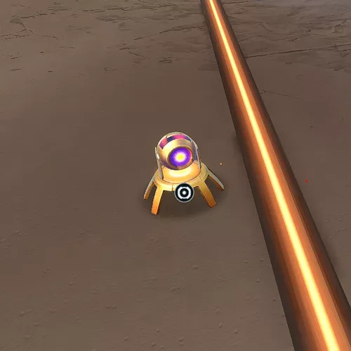
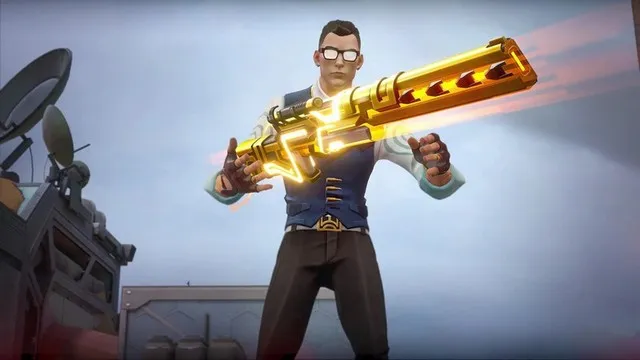

CHAMBER
Função: Sentinela
Biografia: O armeiro francês Chamber traz precisão mortal e mobilidade elegante. Vestido impecavelmente e armado até os dentes, ele elimina alvos com estilo inigualável e sai ileso graças ao seu teleporte pessoal.
ARMAMENTO PERSONALIZADO
CAÇADOR DE CABEÇAS
Q - Ativa uma Heavy Pistol precisa que causa dano alto a longas distâncias.
RENDEZVOUS

E - Posiciona âncoras de teleporte. Reative para se teletransportar entre elas.
MARCA REGISTRADA
C - Coloca uma armadilha que detecta e reduz a velocidade de inimigos.
TOUR DE FORCE
X - Conjura um poderoso fuzil de precisão customizado que mata com um tiro na cabeça.
ESTATÍSTICAS DAS ARMAS
- Caçador de Cabeças: 159dmg cabeça | 55dmg corpo | 1.5s entre tiros
- Tour de Force: Dano infinito na cabeça | 150dmg corpo | Cria campo de lentidão no abate
- Marca Registrada: 50dmg ao ativar | 9.5s duração | 40s cooldown
GUIA DE TELETRANSPORTE
Posicionamento ideal:
- Coloque a primeira âncora em um local seguro
- Posicione a segunda âncora em um flanco agressivo
- Teletransporte-se após atirar para reposicionamento rápido
- Destrúa âncoras antigas antes de recolocar
Dica avançada: Use para pegar ângulos arriscados e escapar ileso
ESTRATÉGIAS DE SNIPER
- Combine teleportes com peeks agressivos
- Use Marca Registrada para proteger flancos
- Tour de Force é melhor em longas distâncias
- Caçador de Cabeças economiza dinheiro em rounds eco
- Você pode pegar suas armas caídas após morrer